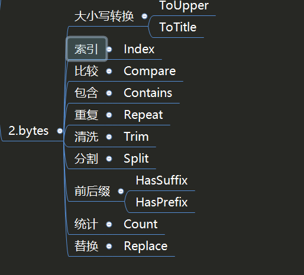

Contents
10.2. bytes¶
内置库bytes提供了与strings库几乎相同的常用操作，只不过两者的数据类型不一样，前者是字节数组，后者是字符串。其实两者可以相互转换，所以只需记住一个常用的用法即可。
10.2.1. 1.byte与string转换¶
如果只想记住其中一种类型的用法，就可以对两者进行转换。
package main
import "fmt"
func ToString(value []byte) string {
return string(value)
}
func ToBytes(value string) []byte {
return []byte(value)
}
func main() {
var A []byte
A = []byte("a b")
var B string
B = "a b"
fmt.Println(fmt.Sprintf("%T,%T", A, B)) //[]uint8,string
fmt.Println(fmt.Sprintf("%T,%T", ToString(A), ToBytes(B))) //string,[]uint8
}
进行强制类型转换之后，就可以使用对应的数据类型进行后续的操作。
10.2.2. 2.Buffer和Reader¶
我们经常在网络请求中构造body时如下操作：
bytes.NewBuffer(p []bytes)
bytes.NewReader(p []bytes)
strings.NewReader(s string)
func HttpByBytes() {
url := "http://httpbin.org/anything?name=xix"
var body map[string]string
body = make(map[string]string)
body["age"] = "20"
body["school"] = "ShangHai"
by, _ := json.Marshal(body)
request, _ := http.NewRequest(http.MethodPost, url, bytes.NewBuffer(by))
client := http.DefaultClient
response, err := client.Do(request)
if err != nil {
panic(err)
}
content, _ := ioutil.ReadAll(response.Body)
fmt.Println(string(content))
}
func HttpByByteNewReader() {
url := "http://httpbin.org/anything?name=xix"
var body map[string]string
body = make(map[string]string)
body["age"] = "20"
body["school"] = "ShangHai"
by, _ := json.Marshal(body)
request, _ := http.NewRequest(http.MethodPost, url, bytes.NewReader(by))
client := http.DefaultClient
response, err := client.Do(request)
if err != nil {
panic(err)
}
content, _ := ioutil.ReadAll(response.Body)
fmt.Println(string(content))
}
func HttpByStrings() {
url := "http://httpbin.org/anything?name=xix"
request, _ := http.NewRequest(http.MethodPost, url, strings.NewReader(`{"name":"XieWei", "school":"ShangHai"}`))
client := http.DefaultClient
response, err := client.Do(request)
if err != nil {
panic(err)
}
content, _ := ioutil.ReadAll(response.Body)
fmt.Println(string(content))
}
内置库bytes和内置库strings的使用方法一致，读者可以根据数据类型是strings还是bytes来选择不同的库进行操作。
10.2.3. 3. 速查表¶
import "bytes"
bytes包实现了操作[]byte的常用函数。本包的函数和strings包的函数相当类似。
s1 := []byte("索宁")
s2 := []byte("索")
fmt.Println(bytes.Equal(s1, s2)) //false(切片的内容是否完全相同)
//Runes函数返回和s等价的[]rune切片。（将utf-8编码的unicode码值分别写入单个rune）
r1 := bytes.Runes(s1)
r2 := bytes.Runes(s2)
fmt.Println(r1) //[32034 23425]
fmt.Println(r2) //[32034]
fmt.Println(r1[0] == r2[0]) //true(可以判断中文)